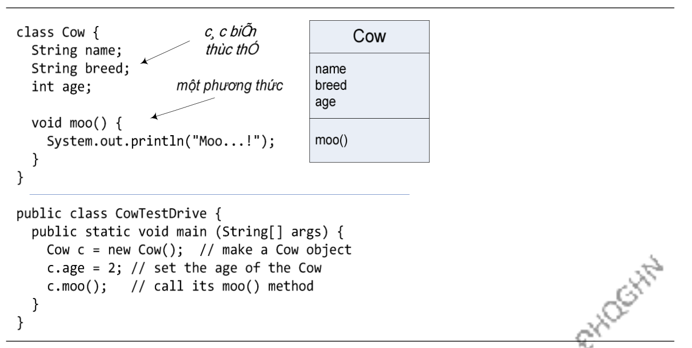

Vậy làm thế nào để tạo và sử dụng một đối tượng? Ta cần đến hai lớp. Một lớp dành cho kiểu đối tượng mà ta muốn tạo (BankAccount, Dog, Cow, AlarmClock, AddressBookEntry,...) và một lớp khác để thử nghiệm lớp đó. Lớp thử nghiệm là chương trình, nơi ta đặt phương thức main, và tại phương thức main đó, ta tạo và sử dụng các đối tượng thuộc lớp vừa xây dựng. Lớp thử nghiệm chỉ có một nhiệm vụ duy nhất: chạy thử các biến và phương thức của lớp đối tượng mới.
Hình 3.2. Lớp Cow và lớp thử nghiệm CowTestDrive
Từ đây, trong nhiều ví dụ, ta sẽ dùng hai lớp. Một là lớp định nghĩa các đối tượng ta muốn dùng, lớp kia là lớp thử nghiệm với tên là
Chương trình CowTestDrive thử nghiệm lớp Cow bằng cách tạo một đối tượng c4 thuộc lớp này (lệnh Cow c = new Cow()), sau đó dùng toán tử dấu chấm (.) để truy nhập các biến thực thể và gọi phương thức của đối tượng. Cụ thể, lệnh c.age = 2 gán giá trị 2 cho biến thực thể age của c, còn c.moo() kích hoạt phương thức moo() của c.
Để cài đặt một lớp, việc viết một lớp thử nghiệm kèm theo không phải là bước bắt buộc. Tuy nhiên, đó là công việc cần thiết để đảm bảo rằng lớp đó đã được cài đặt đúng và hoạt động như mong muốn của người thiết kế.

Hình 3.3. Lớp PhoneBookEntry và lớp thử nghiệm.
Ví dụ trong Hình 3.3 tương tự với ví dụ trong Hình 3.2. Phương thức main ở đây tạo hai đối tượng thuộc lớp PhoneBookEntry, gán giá trị cho các biến thực thể của chúng và gọi phương thức display() cho từng đối tượng. Để ý rằng hai đối tượng tom và jerry có các bộ biến name và phone độc lập với nhau, tuy rằng chúng trùng tên.